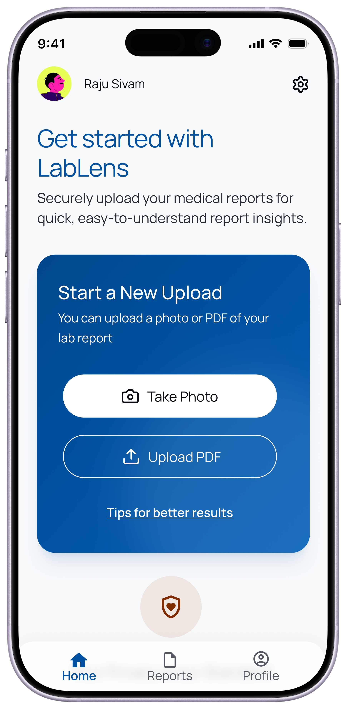

Portfolio case study · Product concept
Turning medical reports into clarity, not anxiety
LabLens is an AI-powered mobile app that helps non-medical users understand their lab results, prepare for doctor visits, and take confident, informed next steps without any overwhelm.
Conceptual product design project for portfolio purposes. LabLens is not a diagnostic tool. All recommendations to consult a healthcare professional are preserved.
The problem
Medical reports arrive, and most people have no idea what they mean
Non-medical users frequently receive lab results they cannot interpret. Values like HbA1c, creatinine, or TSH are presented without context, in formats designed for clinicians rather than patients. The result is feelings of anxiety and helplessness, cognitive overload, and delayed or uninformed health decisions.
The problem is especially acute for aged adults and those in lower-access communities, where health and digital literacy are lower, and digital tools rarely account for the emotional weight of receiving an unclear result.
"I want to know if something is wrong, and what I can do about it. I don't want to worry, but I can't help it at times."
— Primary persona, LabLens user research
Design strategy
Seven principles, one guided journey
The design strategy centres on a single organising idea: structure the experience as a journey that revolves around the user, not a feature list. Every screen follows the aged user's intent — Understand → Act → Prepare → Seek Help — rather than separating capabilities into disconnected sections.
-
Simplify before informingBreak complex reports into clear, digestible summaries before presenting details. Reducing anxiety is the priority, followed by lowering cognitive overload, as comprehension coupled with reassurance follows clarity.
-
Add meaning through contextA number without context is of no gain. Translating values into plain language and explaining what they mean for the user's health is where real understanding begins.
-
Guide users toward actionEvery insight is paired with a next step: monitor, adjust lifestyle, or consult a doctor. Information without direction creates anxiety; validated direction creates confidence.
-
Personalise the experienceExplanations and recommendations adapt to the user's health history and past reports, thus making guidance feel relevant rather than generic.
-
Support confident doctor interactionsSuggested questions derived from report values help users arrive at consultations prepared, thereby improving the quality of both the conversation and the care.
-
Design with emotional sensitivityCalm, reassuring language reduces anxiety without overlooking severity. The tone always signals when attention is needed and never triggers panic where none is warranted.
-
Structure around user intent, not featuresThe app is organised as a guided journey, so every screen feels like a natural next step, not a disconnected tool.
Feature matrix
Six MVP features, each mapped to a user need
Every feature in LabLens was derived from a specific user need. Nothing was added for its own sake.
| User need | Feature | Value delivered |
|---|---|---|
| Upload reports seamlessly | Quick photo or file upload on homepage | Simplicity of use and ease of access |
| Understand report values | AI-simplified report summary with status indicators | Reduces confusion and cognitive overload |
| Understand what results mean | Plain language explanations of medical terms | Improves comprehension and confidence |
| Know what to do next | Actionable next steps — monitor, seek care, or adjust lifestyle | Helps users take informed action |
| Prepare for doctor visits | Suggested questions generated from report results | Improves quality of doctor consultations |
| Feel reassured and guided | Contextual reassurance to help ease anxiety and doubt | Builds trust and reduces uncertainity |
Screens
Five surfaces, one continuous journey
Each screen corresponds to a stage in the user journey — from uploading a report to walking into a doctor's consultation prepared. Early layout directions were explored with AI-assisted tools, then refined and redesigned in Figma based on usability, accessibility, and product goals. The concept has been designed with aged and anxious users in mind.

The home screen leads with the primary action — starting a scan — presented as a clear, prominent card. Two entry points (Take Photo and Upload PDF) cover how most users in the target audience actually receive their reports. A privacy reassurance message appears before the user commits, building trust at the moment of greatest concern.

A plain-language opener leads before any numerical detail. HbA1c at 6.1% is shown with a visual status bar from Low to High, giving immediate spatial context. A "What this means" anchor invites deeper reading without forcing it.

Every insight ends with direction. A prominent disclaimer ("This is not a medical diagnosis. Please consult a healthcare professional for confirmation") is placed immediately after the conclusion — not buried — ensuring the tool's purpose as an informer, not a diagnostician, is never obscured.

Preparation for the consultation happens in the same flow as the report summary — not in a separate feature. Generated questions the user can bring to their appointment are each copyable, reducing friction at the point of consultation.
Hypothesised impact
What success looks like
As a product concept, impact is framed as hypotheses grounded in the documented user needs and behavioural patterns the design directly addresses.